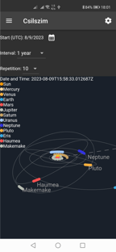
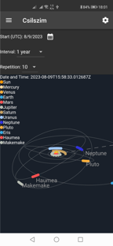

Csilszim
Android用の天文シミュレーターです。メシエ天体や惑星などの観測に役に立つ情報を提供します。


 

システム要件
API 26 (Android 8.0) もしくは、それ以降。
特徴
- 時計：世界時・標準時・平均太陽時・恒星時の時計です。恒星時の時計のパネルには、黄道十二星座のシンボルが表示されます。それにより、指定した観測地における子午線を通過する星座が分かります。
- ある時の夜空：指定した観測地、指定した日時における天体の位置を示します。日時は右上のダイヤルで変更可能です。日付モードの時は1周が1年、時刻モードの時は1周が24時間となります。サマータイムに対応しており、サマータイムの時は目盛りが左回りにシフトします。0時の位置は標準時で1月1日0時を基準とします。ダイヤルの円の部分を円周に沿ってドラッグ/スワイプすると日時を変更できます。日付モードと時刻モードは中央をクリック/タップすることで切り替えられます。中央の赤い円は視野を示しており、ファインダーでの見え方の参考にすることができます。1～10度の間で変更可能です。太陽系の天体の大きさは、縮小表示の時は光度基準、拡大表示の時は見かけの大きさ基準になります。
- 一晩の夜空：指定した観測地、指定した日の明朝もしくは晩において地平線よりも上にくる天体を示します。青いゾーンの天体は薄明時と日中に地平線より上にある天体を示します。白いゾーンの天体は日中にのみ地平線よりも上にくる天体を示します。地平線よりも上にくることのない天体は表示されません。メルカトル図法で表示されるため、天の赤道から位置が離れるほど距離が拡大されて表示されます。日時設定ダイヤルと中央の赤い円についてはMomentary viewと同様です。
- 軌道：太陽系の主な天体の軌道と位置を示します。指定した日から指定した間隔で指定した回数分、表示します。矢印は春分点の方向を示します。ドラッグ/スワイプで視点の位置を変更できます。ホイール/ピンチで拡大・縮小できます。惑星といくつかの準惑星と彗星を表示できます。
- 天体リスト：メシエ天体と明るい恒星について、現在の天球上の位置をリアルタイムで表示します。赤道座標系と地表座標系で表示されます。高度の高い天体は明るい色、低い天体や地平線より下にある天体は暗い色で表示されます。
使い方
日時ダイヤルでの日時の選択
日付モードの時は1周が1年、時刻モードの時は1周が24時間となります。サマータイムに対応しており、サマータイムの時は目盛りが左回りにシフトします。0時の位置は標準時で1月1日0時を基準とします。ダイヤルの円の部分を円周に沿ってドラッグ/スワイプすると日時を変更できます。日付モードと時刻モードは中央をクリック/タップすることで切り替えられます。
更新履歴
1 (0.1)
2023年8月8日 10時00分 (Europe/Budapest)
最初のリリースです。
プライバシポリシー
最終更新：2023年8月1日
本アプリのご利用に当たりまして、このプライバシポリシーにて個人情報の扱いをご確認下さい。
ユーザのデータの収集
本アプリの開発元は個人情報を収集しません。
追加の権限
本アプリは、許可が与えられた場合のみ、位置情報を利用します。そのデータが他のアプリやサービスで利用されることはありません。
変更
このプライバシポリシーは何らかの理由により変更されることがあります。
利用にあたっての同意
本プライバシポリシー及びサードパーティのプライバシポリシーに同意の上でご利用下さい。もし、同意いただけない場合は本アプリをアンインストールして下さい。
お問い合わせ
プライバシポリシーにつきましてご質問がある場合はwithlet11@gmail.comにお問い合わせ下さい。